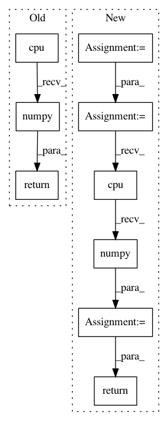

190d9b204a1a4798f0723c8d8d37ac5ac950909e,pycox/models/deephit.py,DeepHitSingle,predict_survival_function,#DeepHitSingle#Any#Any#Any#Any#Any#,34
Before Change
def predict_survival_function(self, input, batch_size=8224, eval_=True, to_cpu=False,
num_workers=0):
Mighht need to set to_cpu to true if too large dataset.
cdf = (self.predict(input, batch_size, False, eval_, False, to_cpu, num_workers)
.softmax(1)
[:, :-1]
.cumsum(1)
.cpu()
.numpy())
return 1 - cdf.transpose()
def make_loss_deephit(alpha, sigma):
Loss for deephit (single risk) model.
After Change
def predict_survival_function(self, input, batch_size=8224, eval_=True, to_cpu=False,
num_workers=0):
Might need to set to_cpu to true if too large dataset.
pmf = self.predict_pmf(input, batch_size, eval_, to_cpu, num_workers, False)
surv = 1 - pmf.cumsum(0)
if tuplefy(input).type() is np.ndarray:
surv = surv.cpu().numpy()
return surv
def predict_pmf(self, input, batch_size=8224, eval_=True, to_cpu=False, num_workers=0,
numpy=None):
Mighht need to set to_cpu to true if too large dataset.
In pattern: SUPERPATTERN
Frequency: 3
Non-data size: 9
Instances
Project Name: havakv/pycox
Commit Name: 190d9b204a1a4798f0723c8d8d37ac5ac950909e
Time: 2019-05-08
Author: haavard.kvamme@gmail..com
File Name: pycox/models/deephit.py
Class Name: DeepHitSingle
Method Name: predict_survival_function
Project Name: interactiveaudiolab/nussl
Commit Name: 055caff00ce0b411c26a3d37ccc538a5f3f47ab9
Time: 2020-03-11
Author: prem@u.northwestern.edu
File Name: nussl/separation/deep/deep_clustering.py
Class Name: DeepClustering
Method Name: extract_features
Project Name: interactiveaudiolab/nussl
Commit Name: 2ffbfa3a6bd3b8de8e21a762489346054dcd9ccc
Time: 2020-03-12
Author: prem@u.northwestern.edu
File Name: nussl/separation/deep/deep_mask_estimation.py
Class Name: DeepMaskEstimation
Method Name: extract_features